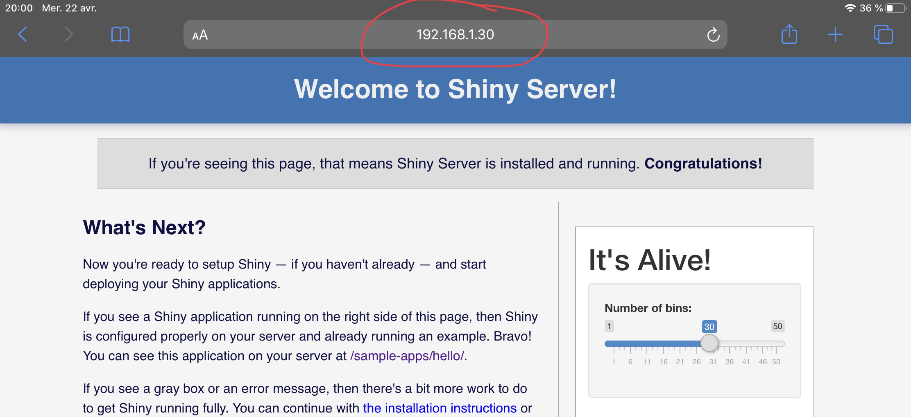

3 Servir vos applications Shiny
Bien qu’il soit intéressant de servir des pages HTML statiques directement à partir du serveur shiny vous vous doutez bien que ce n’est pas pour cette tâche que nous avons installé Shiny Server.
Le serveur Shiny permet de déployer votre application sur le web permettant ainsi à d’autres personnes de l’utiliser. Dans cette section je vais détailler deux manières de déployer votre application Shiny pour que d’autres personnes l’utilisent. Je parlerai de comment servir votre application sur votre local puis comment permettre que des personnes en dehors de votre local l’utilisent. Pour cette dernière option je ne me restreindrai qu’à présenter les options gratuites.
3.1 Servir l’application dans votre réseau local (LAN)
Une fois que vous avez fini de configurer le serveur shiny sur votre ordinateur tous les appareils connectés au même réseau que votre ordinateur peuvent accéder au serveur par le biais de l’adresse IP de votre ordinateur.
Le routeur de votre fournisseur d’accès Internet (FAI) assigne à chaque appareil connecté à votre réseau une adresse IP locale pour identifier vos appareils dans le réseau local. Ce qui nous intéresse ici c’est de trouver l’adresse IP de l’ordinateur sur lequel est installé le serveur Shiny.
Avec le terminal nous pouvons utiliser les commandes ip ou ifconfig pour afficher les informations réseau de l’ordinateur. L’adresse qui nous intéresse commence par inet donc nous allons n’afficher que ces informations. L’adresse IP de l’ordinateur visible sur le local est le 192.168.1.30, donc pour accéder au serveur Shiny à partir d’un autre appareil connecté au réseau est 192.168.1.30:3838.
inet 127.0.0.1/8 scope host lo
inet6 ::1/128 scope host
inet 192.168.1.30/24 brd 192.168.1.255 scope global dynamic noprefixroute wlp2s0
inet6 2a01:e35:2f52:e110:b9fb:e440:4a67:df16/64 scope global temporary dynamic
inet6 2a01:e35:2f52:e110:c7c1:3225:f6ab:229b/64 scope global dynamic mngtmpaddr noprefixroute
inet6 fe80::55b7:be6e:a6b5:4a2d/64 scope link noprefixroute Je vais me connecter au serveur Shiny sur ma tablette.

Dès lors vous pouvez utiliser votre application sur tous les appareils connectés à votre réseau local. Cela peut aider à observer le comportement de l’application sur différents types d’écran pour affiner l’interface.
3.2 Accéder à l’application sur Internet
L’application qu’on a déployé sur le serveur Shiny local ne peut être accessible qu’aux appareils connectés au réseau local, une personne en dehors du réseau ne peut y accéder car il n’est pas sur Internet. Je vais dans cette sous-section vous présenter deux solutions pour déployer vos applications de manière à ce que toute personne disposant du lien peut y accéder grâce à Internet. Je présenterai deux solutions : shinyapps.io lorsque votre application est prête à l’emploi et que vous voulez le rendre disponible et une solution pour ouvrir votre réseau local à Internet.
3.2.1 Avec shinyapps.io
// A FAIRE
3.2.2 Sous un tunnel SSH avec ngrok
// A FAIRE